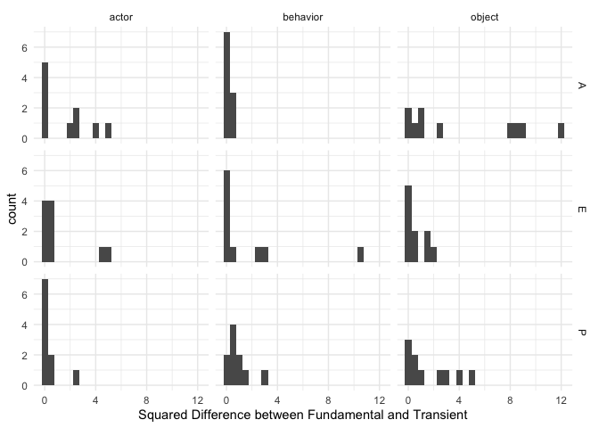

The goal of inteRact is to make affect control theory (ACT) equations accessible to a broader audience of social scientists.
ACT is a theory of social behavior that hinges on the control principle of people acting in ways to confirm cultural meaning. ACT theoretical concepts have been used fruitfully in recent research within cultural sociology (Hunzaker 2014, 2018), stratification and occupational research (Freeland and Hoey 2018), social movements research (shuster and Campos-Castillo. 2017), gender and victimization (Boyle and McKinzie 2015; Boyle and Walker 2016). Information about ACT as a theory can be accessed here: https://research.franklin.uga.edu/act/
The goal of this package is to make elements of typical ACT analyses easier to implement into R: calculating the deflection of an event, the optimal behavior of an actor after an event, the relabeling of the actor or object after an event, and calculating emotions within events. You can look within the functions to see how the equations were programmed, but to truly get a handle on the equations and how they work, I refer you to Expressive Order (Heise 2010).
You can install the development version from GitHub with:
# install.packages("devtools")
devtools::install_github("ekmaloney/inteRact")The following analysis is an example of how to use this package to implement ACT equations in your work. There are two versions of every function: single and batch. The single version takes in a single event and the batch takes in a dataframe of many events to make it easier to calculate the concept of interest for many events at once.
First, for any analysis you do, you need to ensure that the identities, behaviors, and modifiers that you study are measured in the ACT dictionary. inteRact includes the US dictionary that was measured in 2015 as the default dictionary (us_2015_full) and uses the US equations as default for calculations.
Future versions will allow you to upload your own dictionaries and use them in calculations.
First, the following code samples 20 identities and 10 behaviors to create a 10 event dataframe for the analysis.
library(inteRact)
library(kableExtra)
library(knitr)
library(tibble)
library(tidyverse)
#> ── Attaching packages ─────────────────────────────────────── tidyverse 1.3.0 ──
#> ✓ ggplot2 3.3.2 ✓ dplyr 1.0.2
#> ✓ tidyr 1.1.2 ✓ stringr 1.4.0
#> ✓ readr 1.4.0 ✓ forcats 0.5.0
#> ✓ purrr 0.3.4
#> ── Conflicts ────────────────────────────────────────── tidyverse_conflicts() ──
#> x dplyr::filter() masks stats::filter()
#> x dplyr::group_rows() masks kableExtra::group_rows()
#> x dplyr::lag() masks stats::lag()
#load US dictionary
data("us_2015_full")
#make a dataframe of events
set.seed(814)
events <- tibble(actor = sample(us_2015_full$term[us_2015_full$type == "identity"], 10),
behavior = sample(us_2015_full$term[us_2015_full$type == "behavior"], 10),
object = sample(us_2015_full$term[us_2015_full$type == "identity"], 10))
kable(events, caption = "Sample Events for Analysis")|
actor |
behavior |
object |
|---|---|---|
|
brute |
work |
cook |
|
dolt |
say_farewell_to |
executioner |
|
husband |
suck_up_to |
trainee |
|
sheet_metal_worker |
debate_with |
junkie |
|
hindu |
beg |
lout |
|
casual_laborer |
deprecate |
bailiff |
|
housebreaker |
implicate |
welder |
|
addict |
suspect |
assistant |
|
millionaire |
shock |
machine_repairer |
|
hothead |
refuse |
blind_person |
To calculate deflection for a single event, you can use the function calc_deflection, which has 4 arguments: actor, behavior, object (all character strings), and dictionary (set to US currently). To calculate deflection for a series of events, you can use the function batch_deflection which has 1 argument: a dataframe with an actor, behavior, and object column (must be named that). For example, to find the deflection of you would do the following:
calc_deflection("brute", "work", "cook")
#> # A tibble: 1 x 1
#> d
#> <dbl>
#> 1 3.91To calculate the deflection of all of the events in the sample events dataframe, you would do the following:
batch_deflection(events)
#> # A tibble: 10 x 4
#> # Rowwise:
#> actor behavior object deflection$d
#> <chr> <chr> <chr> <dbl>
#> 1 brute work cook 3.91
#> 2 dolt say_farewell_to executioner 3.51
#> 3 husband suck_up_to trainee 10.5
#> 4 sheet_metal_worker debate_with junkie 3.43
#> 5 hindu beg lout 5.02
#> 6 casual_laborer deprecate bailiff 7.20
#> 7 housebreaker implicate welder 2.25
#> 8 addict suspect assistant 3.94
#> 9 millionaire shock machine_repairer 4.07
#> 10 hothead refuse blind_person 2.71This is mainly a convenience function - if you are interested in seeing the code behind it, this is how you could do it outside of the batch function:
events %>%
rowwise() %>%
mutate(deflection = calc_deflection(actor, behavior, object),
deflection = deflection$d)
#> # A tibble: 10 x 4
#> # Rowwise:
#> actor behavior object deflection
#> <chr> <chr> <chr> <dbl>
#> 1 brute work cook 3.91
#> 2 dolt say_farewell_to executioner 3.51
#> 3 husband suck_up_to trainee 10.5
#> 4 sheet_metal_worker debate_with junkie 3.43
#> 5 hindu beg lout 5.02
#> 6 casual_laborer deprecate bailiff 7.20
#> 7 housebreaker implicate welder 2.25
#> 8 addict suspect assistant 3.94
#> 9 millionaire shock machine_repairer 4.07
#> 10 hothead refuse blind_person 2.71Additionally, you can see which elements contribute the most to the overall deflection by using the element_deflection function, as below. This returns a dataframe that includes each element’s fundamental sentiment, the corresponding transient impression, the difference between the two, and the squared difference. In this way, you can see which element moved the most in EPA space after an event. In the case of brute works cook, the most deflection element-dimension is the Power of the Object (cook) followed by the Evaluation of the Actor (brute),
kable(element_deflection("brute", "work", "cook"), digits = 3)|
term |
element |
dimension |
fundamental_sentiment |
trans_imp |
difference |
sqd_diff |
|---|---|---|---|---|---|---|
|
brute |
A |
E |
-1.97 |
-1.178 |
-0.792 |
0.626 |
|
brute |
A |
P |
1.74 |
1.571 |
0.169 |
0.029 |
|
brute |
A |
A |
1.44 |
1.148 |
0.292 |
0.085 |
|
work |
B |
E |
0.27 |
-0.346 |
0.616 |
0.379 |
|
work |
B |
P |
1.51 |
1.457 |
0.053 |
0.003 |
|
work |
B |
A |
0.99 |
0.999 |
-0.009 |
0.000 |
|
cook |
O |
E |
2.24 |
1.240 |
1.000 |
0.999 |
|
cook |
O |
P |
1.69 |
0.464 |
1.226 |
1.504 |
|
cook |
O |
A |
1.58 |
1.051 |
0.529 |
0.280 |
Again, you can do this for an entire dataframe using batch_element_deflection:
elem_def <- batch_element_deflection(events)
elem_def
#> # A tibble: 90 x 10
#> actor behavior object term element dimension fundamental_sen… trans_imp
#> <chr> <chr> <chr> <chr> <chr> <chr> <dbl> <dbl>
#> 1 brute work cook brute A E -1.97 -1.18
#> 2 brute work cook brute A P 1.74 1.57
#> 3 brute work cook brute A A 1.44 1.15
#> 4 brute work cook work B E 0.27 -0.346
#> 5 brute work cook work B P 1.51 1.46
#> 6 brute work cook work B A 0.99 0.999
#> 7 brute work cook cook O E 2.24 1.24
#> 8 brute work cook cook O P 1.69 0.464
#> 9 brute work cook cook O A 1.58 1.05
#> 10 dolt say_far… execu… dolt A E -0.97 -0.519
#> # … with 80 more rows, and 2 more variables: difference <dbl>, sqd_diff <dbl>Following this, you can look at how different elements contribute to the overall deflection across your events:
ggplot(data = elem_def, mapping = aes(x = sqd_diff)) +
geom_histogram(binwidth = 0.5) + facet_grid(dimension ~ element) +
theme_minimal() + labs(x = "Squared Difference between Fundamental and Transient")
beh <- optimal_behavior("brute", "work", "cook")
beh
#> # A tibble: 1 x 3
#> E P A
#> <dbl> <dbl> <dbl>
#> 1 -0.110 0.763 1.61
closest_term(beh$E, beh$P, beh$A, term_typ = "behavior", max_dist = 1)
#> # A tibble: 45 x 17
#> term E P A E2 P2 A2 type country year d_e
#> <chr> <dbl> <dbl> <dbl> <dbl> <dbl> <dbl> <chr> <chr> <dbl> <dbl>
#> 1 hagg… -0.26 0.84 1.59 -0.26 0.84 1.59 beha… US 2015 -0.150
#> 2 paro… -0.01 0.8 1.46 -0.01 0.8 1.46 beha… US 2015 0.0998
#> 3 prea… 0.33 1.09 1.58 0.33 1.09 1.58 beha… US 2015 0.440
#> 4 hurry -0.46 0.75 2.04 -0.46 0.75 2.04 beha… US 2015 -0.350
#> 5 disp… -0.1 1.32 1.54 -0.1 1.32 1.54 beha… US 2015 0.00978
#> 6 dare -0.53 0.86 1.24 -0.53 0.86 1.24 beha… US 2015 -0.420
#> 7 laug… -0.56 0.85 1.99 -0.56 0.85 1.99 beha… US 2015 -0.450
#> 8 jest -0.44 0.28 1.48 -0.44 0.28 1.48 beha… US 2015 -0.330
#> 9 ravi… 0.24 1.24 1.42 0.24 1.24 1.42 beha… US 2015 0.350
#> 10 kid 0.22 0.36 1.25 0.22 0.36 1.25 beha… US 2015 0.330
#> # … with 35 more rows, and 6 more variables: d_p <dbl>, d_a <dbl>, d_e_s <dbl>,
#> # d_p_s <dbl>, d_a_s <dbl>, ssd <dbl>
closest_term(beh$E, beh$P, beh$A, term_typ = "behavior", max_dist = 0.5)
#> # A tibble: 11 x 17
#> term E P A E2 P2 A2 type country year d_e
#> <chr> <dbl> <dbl> <dbl> <dbl> <dbl> <dbl> <chr> <chr> <dbl> <dbl>
#> 1 hagg… -0.26 0.84 1.59 -0.26 0.84 1.59 beha… US 2015 -0.150
#> 2 paro… -0.01 0.8 1.46 -0.01 0.8 1.46 beha… US 2015 0.0998
#> 3 prea… 0.33 1.09 1.58 0.33 1.09 1.58 beha… US 2015 0.440
#> 4 hurry -0.46 0.75 2.04 -0.46 0.75 2.04 beha… US 2015 -0.350
#> 5 disp… -0.1 1.32 1.54 -0.1 1.32 1.54 beha… US 2015 0.00978
#> 6 dare -0.53 0.86 1.24 -0.53 0.86 1.24 beha… US 2015 -0.420
#> 7 laug… -0.56 0.85 1.99 -0.56 0.85 1.99 beha… US 2015 -0.450
#> 8 jest -0.44 0.28 1.48 -0.44 0.28 1.48 beha… US 2015 -0.330
#> 9 ravi… 0.24 1.24 1.42 0.24 1.24 1.42 beha… US 2015 0.350
#> 10 kid 0.22 0.36 1.25 0.22 0.36 1.25 beha… US 2015 0.330
#> 11 josh 0.15 0.39 1.12 0.15 0.39 1.12 beha… US 2015 0.260
#> # … with 6 more variables: d_p <dbl>, d_a <dbl>, d_e_s <dbl>, d_p_s <dbl>,
#> # d_a_s <dbl>, ssd <dbl>
ce <- characteristic_emotion("brute")
ce
#> # A tibble: 1 x 3
#> E P A
#> <dbl> <dbl> <dbl>
#> 1 -1.40 3.05 1.46
closest_term(ce[1], ce[2], ce[3], term_typ = "modifier", max_dist = 1)
#> # A tibble: 1 x 17
#> term E P A E2 P2 A2 type country year d_e$E d_p$P
#> <chr> <dbl> <dbl> <dbl> <dbl> <dbl> <dbl> <chr> <chr> <dbl> <dbl> <dbl>
#> 1 domi… -1.36 2.29 1.45 -1.36 2.29 1.45 modi… US 2015 0.0361 -0.757
#> # … with 5 more variables: d_a$A <dbl>, d_e_s$E <dbl>, d_p_s$P <dbl>,
#> # d_a_s$A <dbl>, ssd <dbl>